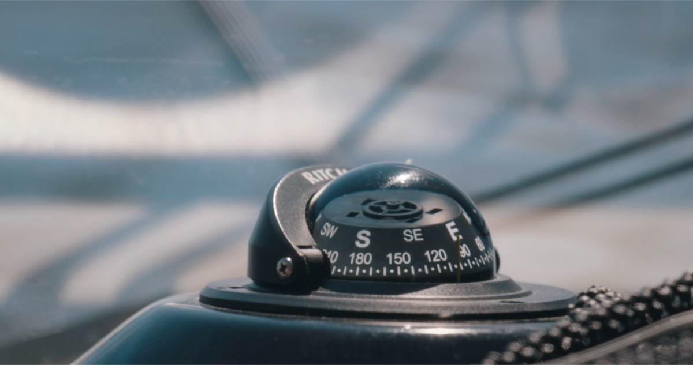
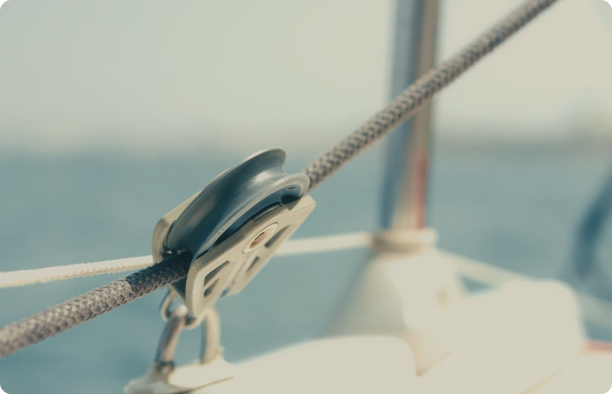
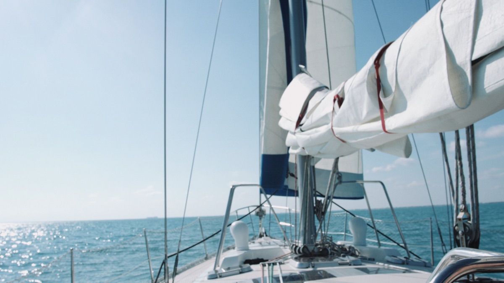
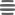
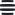

HoneyB
Multi-strategy income portfolios plotted and run by SEC-registered managers. Not emissions. Not points. The strategies institutions actually allocate to.

Bank custody. Independent daily NAV. Annual audits. The same service stack as a traditional institutional fund, because it is one.

Tokenized units in your own wallet. Hold it, verify it, redeem at NAV, on your schedule. The position answers only to you.
Permissions set, your custody stays put.
Pick a strategy; mint your on-chain position.
Earn yield, monitor your position, redeem.
Every position, every fee, every NAV published on-chain. No fog between you and your money.

HoneyBWe believe you should be at the helm of your own finance. Your wallet, your course to chart.
Access tokenized treasuries and credit.

HoneyBHoneyB, the platform behind Double Digit, opens institutional yield strategies to long-term BTC holders. No selling, no wrapping your thesis around someone else’s.
Learn More